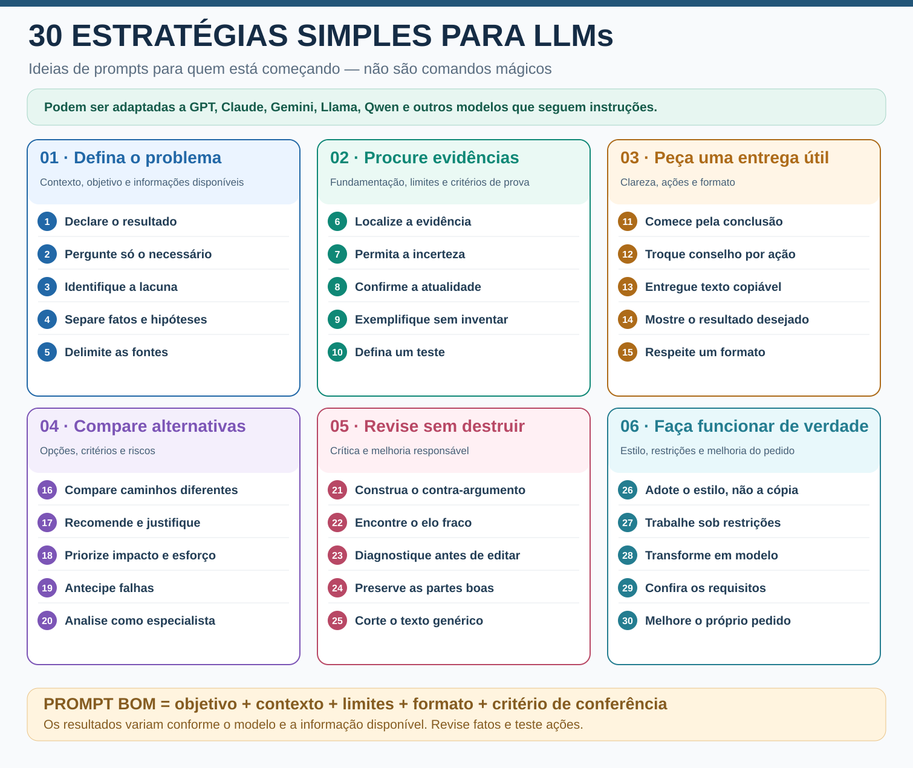
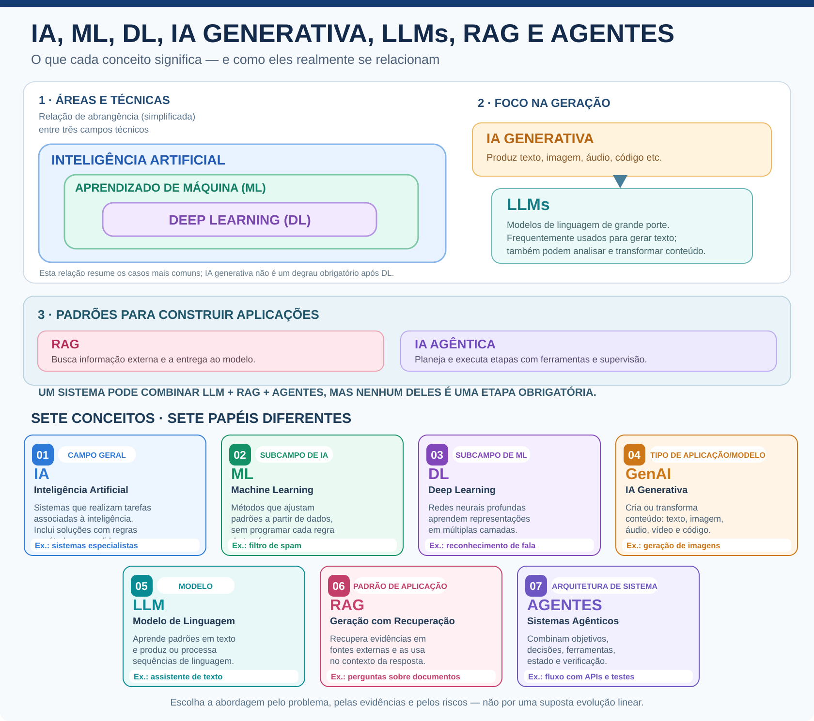
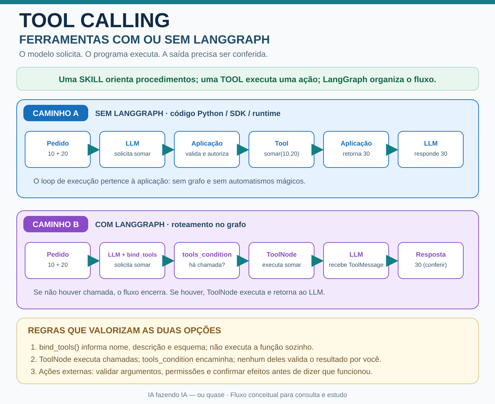
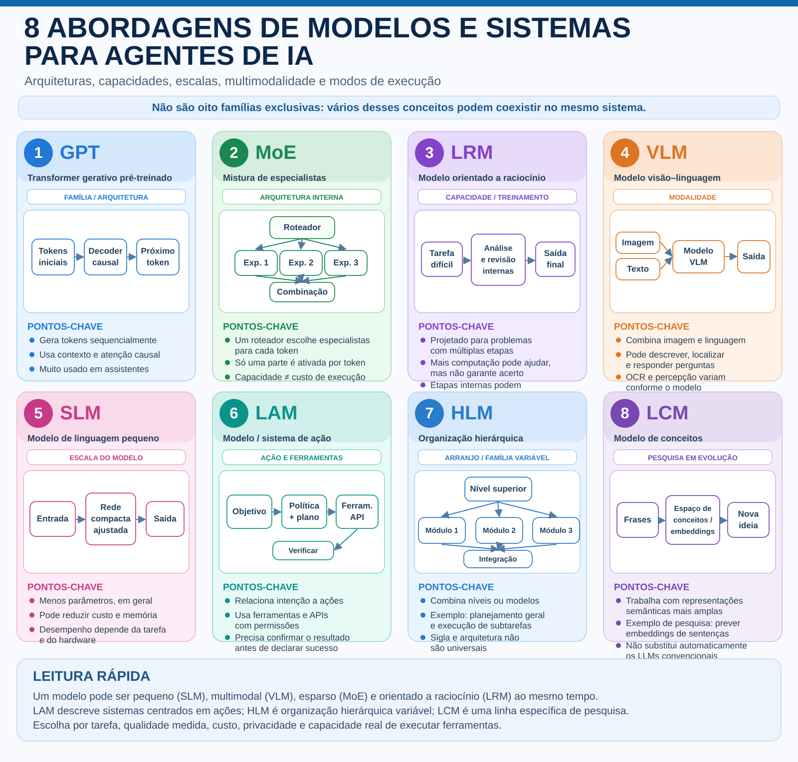

30 estratégias simples de prompts para iniciantes
Ideias reutilizáveis para vários modelos de linguagem, sem promessas mágicas. Exemplos copiáveis, limites e critérios para conferir resultados.
Explorar as estratégias
As nove fórmulas das redes neurais
Neurônios, ativação, perda, retropropagação, softmax e treino explicados com exemplos numéricos, símbolos e um código Python para conferir as contas.
Aprender as fórmulas passo a passoFundamentos de Machine Learning
Uma ponte rigorosa entre algoritmos clássicos, treino, métricas e o funcionamento das LLMs atuais. Com exemplos, exercícios e referências ao documento motivador.
Ler o caderno documental
As 9 camadas do ecossistema de IA generativa
Modelos, frameworks, busca, inferência, avaliação e agentes: panorama em português com leitura crítica, limites e trilha de estudo.
Explorar o panorama de ferramentas
IA, ML, DL, GenAI, LLMs, RAG e agentes
Entenda o papel de cada conceito e suas relações reais, sem confundir áreas técnicas, modelos e arquiteturas de aplicação.
Explorar o mapa de conceitos
Tool Calling: com ou sem LangGraph
Fluxos comparados e exemplos Python: usar ferramentas não exige LangGraph; ToolNode e tools_condition são recursos opcionais para orquestração.
Explorar os dois fluxos
8 abordagens para agentes de IA
GPT, MoE, LRM, VLM, SLM, LAM, HLM e LCM em oito cartões visuais, com classificações tecnicamente diferenciadas.
Explorar os oito conceitos
120 conceitos essenciais de LLMs
Mapa de estudo organizado em fundamentos, treinamento, inferência e aplicações. Infográfico colorido em português, disponível em SVG.
Abrir o guia visual
Arquitetura de um agente de IA
Objetivo, orquestração, execução, ferramentas, memória, RAG, segurança e implantação. Diagrama vetorial e conceitos técnicos essenciais.
Explorar o infográfico
40 perguntas essenciais sobre LLMs
Sete temas: fundamentos, atenção, treinamento, prompting, contexto, segurança e implantação. Respostas revisadas e ilustrações editáveis.
Ler o guia ilustrado
Arquitetura de um pipeline RAG
Preparação e indexação separadas da consulta: busca textual, vetorial ou híbrida, montagem do contexto e respostas fundamentadas. Fluxo tecnicamente revisado.
Explorar o pipeline RAG
Laboratório RAG na prática
Monte um RAG com documentos de exemplo, comandos para copiar, buscas no SQLite e geração opcional pelo Ollama.
Executar laboratório passo a passoGaleria de diagramas
Selecione qualquer imagem para abrir o SVG original em tamanho integral.
 02 · Transformers e atenção
02 · Transformers e atenção 03 · Prompt, RAG e ajuste fino
03 · Prompt, RAG e ajuste fino 06 · Segurança e verificação
06 · Segurança e verificação